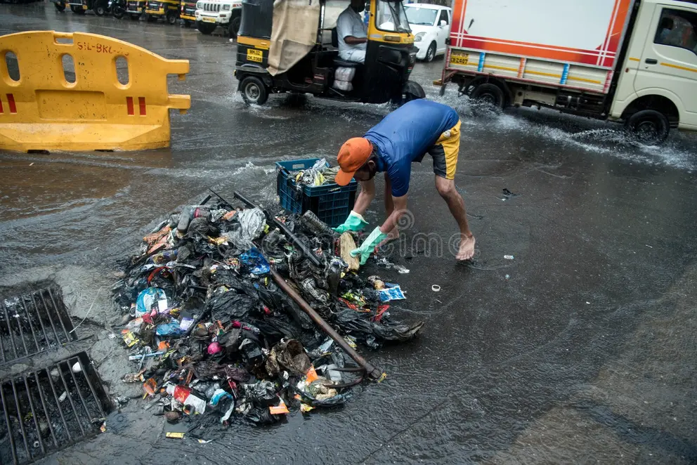

Improper Segregation
Wet and dry waste are often mixed, making recycling and processing difficult.
College Group Project Prototype
An interactive prototype for monitoring waste segregation, drainage conditions, complaints, and flood-risk areas.

Why This Matters
Improper waste segregation and mixed waste disposal make recycling and processing more difficult. Garbage accumulation can create unhealthy surroundings, while waste entering drains can cause blockages and waterlogging. These problems can increase localized flood risk and make it harder for authorities to identify which areas need attention first.
The Problem


Wet and dry waste are often mixed, making recycling and processing difficult.
Uncollected or improperly disposed waste can create unhealthy surroundings.
Waste entering drainage systems can contribute to blockages and waterlogging.
Poor drainage and waste accumulation can increase the risk of localized flooding.
It can be difficult to identify and prioritize problem areas efficiently.
Our Proposed Solution

Visualize areas following and not following waste segregation.
Visualize drainage networks and identify areas requiring attention.
Locate and categorize waste-related complaints on the map.
Highlight illustrative areas with different levels of flood risk.
Use charts and statistics to understand waste-management performance.
How It Works
The prototype uses organized sample data to display map layers, status markers, analytics charts, and priority indicators in one dashboard.
Dashboard Preview
Supporting Sustainable Development
Better waste segregation and monitoring can support the project's intended contribution toward cleaner, more organized, and more sustainable communities.
Sustainable Future
The proposed system is designed to help present waste, drainage, complaint, and risk information clearly so problem areas can be understood faster in a demo monitoring workflow.
About The Project
This project is a prototype demonstrating how geospatial visualization and data analytics could be used to monitor waste segregation, drainage, complaints, and flood-risk conditions. The information displayed in this prototype is illustrative/demo data and is not official municipal data.
Project Team
Role: Research & Problem Analysis
Role: Frontend Development
Role: Mapping & Data Visualization
Role: Documentation & Presentation